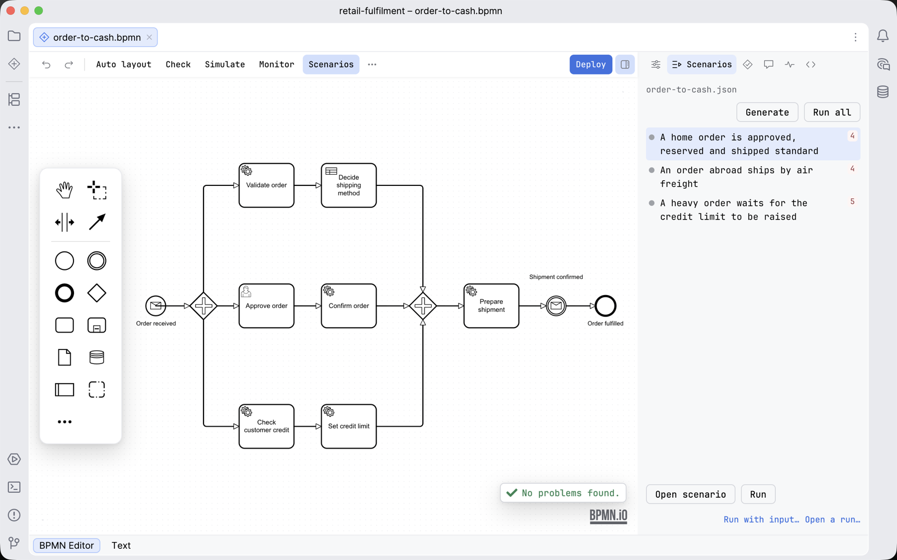

JetBrains / Using it
Tests in the IDE
In a JetBrains IDE, test-case files run in the IDE's own test runner, and process tests run and debug from the diagram.
The Scenarios panel and the scenarios themselves are described once in Scenarios, and process tests and coverage in Process tests and coverage. This page is about how they use the IDE.
Run test-case files in the test runner
- Open a test case file, for example
orders.json. - Click the green triangle in the gutter next to a test case. Or right-click the file, or a folder called
test-cases, and run it. - The IDE's Run window shows a test tree, pass or fail, and the log. Double-click a test to open it in the file.
The run uses the profile in force, or the one the run configuration names. The trace of each run is kept under .penstock/runs/, and its path is in the log. The same safety rules apply as everywhere: the engine must be marked for tests, or you confirm a local one once.

The run configuration
Running a test-case file creates a run configuration of the type Penstock test cases, named after what it runs. It has three fields:
| Test-case file or folder | One file, or a folder, in which every test-case file under it runs. |
| Only the test case named | Empty to run all of them. The gutter triangle of one test case fills it in. |
| Engine profile | The profile in force, or a profile of penstock.yaml. |
You can run it again from the run widget at the top right of the IDE, like any other run configuration. It is in Run | Edit Configurations too. The test tree is the IDE's own test runner. penstock scenarios run runs the same files in a terminal.
The run happens in Penstock's project core, which needs JCEF. In an IDE without it the Run window says so and points at penstock scenarios run. If the core does not answer within 20 seconds, or does not start within two minutes, the run is stopped and the Run window says which.
Run and debug process tests from the diagram
- Right-click an element on the canvas, or the empty canvas, and choose Run Tests or Debug Tests. It runs the test methods that name the element or its process, with the project's own test runner. When you debug, the diagram shows where the process stops.
- In the Penstock tool window, each process lists its tests with how much of it they cover. The Tests node lists every process test by class. Run or debug any of them, a class, or all. Run All Process Tests is on the tool window's toolbar.
- Code Vision above a test says how much of each process it covers.
Coverage
After the process tests have run with Camunda Process Test, or on Camunda 7 with the process test coverage extension, Coverage appears on the editor's toolbar. It reads the reports under target or build and follows them as the tests run again.
What you see
- A test tree with pass or fail, and the log, in the Run window.
- A green triangle in the gutter of each test case.
Common problems
- The Run window says the engine is not marked for tests.
- Set
deployment.forTests: trueon the profile, or confirm a local engine when asked. - There is no Coverage button.
- No test report was found yet. Run the process tests first.
- There is no green triangle in the gutter.
- The file is not a Camunda test-case file: a
.jsonfile in a folder calledtest-cases, or one that names thecpt-test-casesschema. The IDE's JSON support must also be on. - A run says it needs Pro.
- Running a process against an engine is part of Penstock Pro. See Licence in the IDE.